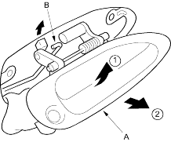
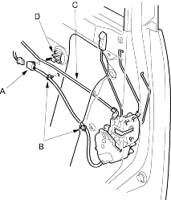

- With outer handle protector: Pull out the outer handle (A), then remove it.

- Without outer handle protector: Pull out the outer handle (A), and disconnect the outer handle rod (B), then remove it.
- Install the handle in the reverse order of removal and note these items:
- Make sure the cylinder switch harness is routed properly (for some models).
- Make sure the cylinder switch connector is plugged in properly (for some models) and each rod is connected securely.
- Make sure the door locks and opens properly.
- If equipped with a outer handle protector, when installing the lock cylinder, leave the outer door handle bolts loose so the inner protector does not interfere with the lock cylinder, then tighten the handle bolts.
- Install the lock cylinder retaining clip on the handle, then install the lock cylinder. Be sure the clip is fully seated in the slot on the lock cylinder.
- Raise the glass fully.
- Remove these items:
- Door panel (see page 20-144)
- Plastic cover, as necessary (see page 20-140)
- Lock rod protector, for some models (see step 3 on page 20-146)
- Centre lower channel (see step 4 on page 20-146)
- Cylinder rod protector, for some models (see step 5 on page 20-146)
- Disconnect the actuator connector(s) (A), and for some models, detach the harness clips (B) and actuator connector. Release the inner handle rod (C) from the rod holder (D).
European models:
